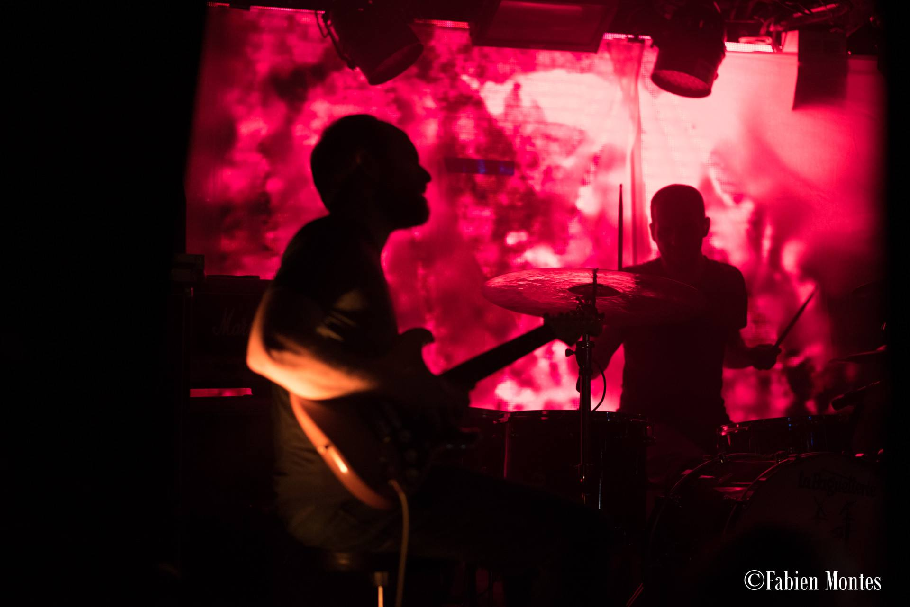

Please LIKE our event on Facebook to keep updated on programme and news regarding the 2017 edition.
FRIDAY 29th SEPTEMBER
// doors open at 6pm
Mokri [NO]
Mokri is a young trio playing a mixture of plastic noise rock, psychedelic rock and no-wave. They will release their debut album this fall. We are excited to include this genre into the blend of this year’s lineup and to present such a brilliant newcomer alongside more established bands like Year of no light and The Shaking Sensations.
Mokri is influenced by both Sigur Rós and Godspeed You! Black Emperor, but you may also find elements sounding like Nirvana, the Swans and Sonic Youth - all this combined with their own youthful energy, you got to love Mokri - VIVID does, including their welcoming contribution to mix up the predominantly male post_rock scene with drummer Andrea Barsnes Undset.
Photo by Jenny Berger Myhre

The Shaking Sensations [DK]
Known for their epic instrumental rock, have expanded the classic rock constellation by the addition of a second drummer, allowing the band to develop a unique approach to the rhythm section and a fresh and unconventional take on instrumental rock music. In the most distinguished way, the collective proves its capabilities of mixing modern classical compositions with alternative rock and shoegaze, to create dreamy, in some way melancholic, noisy and beautiful sound-scapes.
Zwaremetalen (NL) described their album Start Stop Worrying
Great music, straight forward, - maybe post rock does not get better than this?
There´s no reason to wait!
The band’s ability to translate, what can sound introvert and deeply personal on record, to highly intense, thrilling and breathtaking live situations, is yet another point where The Shaking Sensations will surprise the listener and lure one into oblivion and bliss - don´t miss the chance to experience this yourself!
Silent Whale Becomes A° Dream [FR]
Silent Whale Becomes A° Dream takes beauty to another dimension!
Post-Rock Essentials describe the French band as one of the most extraordinary bands of all time, our euphoria having this band as a part of our lineup is impossible to express.
As the Whale itself so perfectly put it: This project is an ode to slowness and to the art of feeling the world, a tribute to
rare things, to things that need time to be. We want to tell you minimalist and deep stories. Stories about the infinite sky over
your head, about the harsh ground under your feet. As promising and frightening as the vast ocean right in front of you.
Close your eyes and listen to their astonishing album
Canopy and become a dream yourself!
Sleepmakeswaves [AU]
Sleepmakeswaves launched their latest album Made of breath
only this spring. On this autumn they will tour Europe, and
VIVID. a post_rock festival 2017 is their kick off!
Made of Breath Only is a personal album or more precisely
..a miserable sack of shit with some great riffs and really beautiful moments on it
as Alex (bass) put it to Rolling Stone Australia. The title track is pure beauty.
Listen here.
Here's the title track described in Alex' and Tim's (drums) own words*:
Alex: I had been idly playing the chords of this song for years, trying to find the right way to fit them in a song. I’m glad they found a home here because they have a vulnerability that balances the visceral riffing on the rest of the record. I particularly love Tim’s drums here. They’re brief, but really powerful.
Otto: We applied the name to this track first, then realized later it captured something special that we wanted to evoke across the whole album so we used it as the album title.
*from an interview in Independent Culture by Remfry Dedman
The band came together in late 2006 with a desire to write textured, dynamic and emotive songs combining delicate beauty with dramatic climaxes. VIVID and their other fans around the world admire them for their innovative and expansive music, coupled with an electrifying live show, the future looks bright for this young instrumental quartet who released their third album this year: Made of Breath Only.
In the Heavy Blog is Heavy interview, Alex Wilson states that by referencing ‘breath’ in the title, sleepmakeswaves is trying to draw attention to the idea that there’s an inherent fragility and temporality to human life. Listen to the track Tundra and feel the beauty of this fragility.
Photo by Georgia Blackie
SATURDAY 30th SEPTEMBER
// doors open at 5pm
Show Me A Dinosaur [RU]
Also playing at VIVID this year is the amazing Show Me A Dinosaur, a heavy post-rock blackgaze band from the beautiful city of Saint Petersburg, Russia.
Show Me A Dinosaur is one of the most intense and awe-inspiring bands in Europe and definitely a genre-defying band. They are consummate masters at blending post-metal, post-rock, shoegaze and ambient doom. Their current sound is a result of an unwavering desire to explore a far more desperate and harsher black metal sound, to persuade listeners to identify what is truly important to them and shift the focus of their determination - what´s not to love?
Show Me A Dinosaur self-titled album was included by Post-Rock Essentials list of the top 30 releases for the year 2016 - an album
described as one of the most uncompromising, unyielding and galvanic albums released in 2016: No fillers and no restraint, just
killer hook-heavy tracks fueled with a sense of urgency and existential angst... This dinosaur has left a footprint the size of
an impact crater
Leonov [NO]
Leonov is a Norwegian band based in Oslo, named after a Russian astronaut, and their music is inspired by the motions between the hope/despair, darkness/light, dependence/vulnerability life is filled with. Leonov aims to encompass the chaos in the world, but also the hope that lies within us.
nordicmusicreview.com writes:
I have no idea where we’ve been to miss this huge sprawling post-rock band from Norway, who released their debut album back in 2014 and write epic industrial sized tracks packed full of huge guitars, swirling sounds and haunting vocals.
Dark, beautiful and big soundscapes, Leonov knows how to treat your inner soul.
Shipwrecks [DE]
VIVID is proud to present Shipwrecks, a hidden musical gem from Cologne, as a part of this year´s lineup. Listen to El Rumpelstilzo and you´ll immediately understand why.
This German four-piece create instrumental post-rock music that is reminiscent of well known bands such as Godspeed You! Black Emperor and Caspian, but yet they found their own sound; fresh and unconventional.
Shipwrecks is known as an excellent & stunning live act, perfect for a festival like VIVID. Their long-awaited debut album will be released this autumn, and VIVID´s audience will probably get the chance to indulge in some of their new tones as well.
Year of No Light [FR]
Year of No Light was formed in 2001 in Bordeaux (Fr).
In their early days’ critics claimed the band sounded like The Cure playing sludge
. Now Year of No Light has created their
own blend of black metal, sludge, drone, doom or any other influence marked with the seal of darkness. Their albums have seamlessly
shifted between genres, balancing post-rock, sludge, somber psychedelics and crushing dark shoegaze.
The album Ausserwelt (2010) sounds like cranked amps and molested drums hurl their mourning chant as a choir intoning its final psalms at the dawn of the Last Judgment. Still no caps, no core neither stupid modern nihilism but instead an ambiguous electrical network of acting singularities, now ready to afford the collective metaphysical crash to come.
Amenra [BE]
Amenra, hailing from Kortrijk, Belgium. Formed in 1999 by vocalist Colin H. van Eeckhout and guitarist Mathieu Vandekerckhove, who now perform alongside drummer Bjorn Lebon, guitarist Lennart Bossu and bassist Levy Seynaeve. Now comfortly established, and with a unique style of playing with the genres of post-metal, post-rock and doom-metal, Amenra is playing at the 2017 edition of Vivid.
In 2005 the band formed a collective of like-minded artists called Church of Ra. Recurring themes in Amenra's music are the duality of birth and death, light and darkness and pain and sacrifice. The band uses psychological and religious motives. Though calling himself agnostic, Van Eeckhout acknowledges the presence of spirituality and religion in the band's work. Amenra often collaborate with visual artists and choreographers, including Willy Vanderperre. and Berlinde De Bruyckere. A perfect match for the great cinema screen backdrop at Vivid. A post_rock festival.